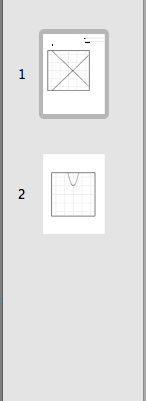
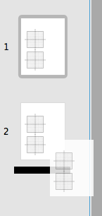
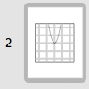

The Pages Panel helps you organize your pages that are in your worksheet. You can reorder, cut, copy, and paste pages and their respective elements using the Pages Panel.
Pages Panel

Pages Panel
-
Reorder PagesIf you have more than one page in your worksheet you can reorder the pages in your worksheet using the following steps:
- Click on the page with the left mouse button and while holding the left mouse button drag the page to the new position.
-
When you reach the desired position release the left mouse button. A black marker should appear noting where the page will be inserted once you release the left mouse button.

Page being dragged
-
Copy PagesYou can copy pages in the Pages Panel by:
- Click on the page you would like to copy with the left mouse button.
The page should have a grey box around it signifying that it's selected. Optionally you can select multiple pages by clicking on several pages while holding the Shift or ⌘ key.
Page selected - Press Control-C (^C) or from the Menu select Edit > Copy.
- Click on the page you would like to copy with the left mouse button.
-
Cut PagesYou can cut pages in the Pages Panel by:
- Click on the page you would like to cut with the left mouse button.
The page should have a grey box around it signifying that it's selected. Optionally you can select multiple pages by clicking on several pages while holding the Shift or ⌘ key.
Page selected - Press Control-X (^X) or from the Menu select Edit > Cut.
Note: GraphPouch will not allow you to cut pages if you attempt to cut all the pages from the worksheet. - Click on the page you would like to cut with the left mouse button.
-
Paste PagesYou can paste pages in the Pages Panel assuming you have already cut or copy pages using the instructions listed above. In order to paste pages you must:
- Click on the page prior to the position where you would like to insert the pages that you have previously copied or pasted. For example, if you want to paste pages in between page 3 and 4, then select page 3.
The page should have a grey box around it signifying that it's selected.
Page selected - Press Control-V (^V) or from the Menu select Edit > Paste.
Note: If you have multiple pages selected then GraphPouch will paste the pages after the last selected page in the Pages Panel . If no pages are selected then GraphPouch will paste the pages after the last page in your worksheet. - Click on the page prior to the position where you would like to insert the pages that you have previously copied or pasted. For example, if you want to paste pages in between page 3 and 4, then select page 3.